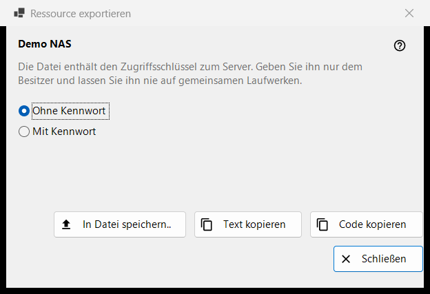
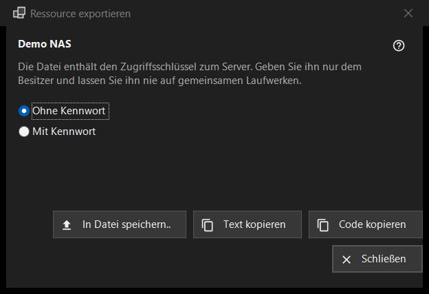

Ressource exportieren
Verwendungszweck
Bereitet die Einstellungen eines SFTP-Servers so vor, dass ein anderer Computer oder ein Telefon sie importieren kann. Das Fenster öffnet sich über «Exportieren..» im Menü «Mehr» der Ressourcenliste und braucht eine ausgewählte Ressource; ein von Share Manager freigegebener Ordner wird stattdessen in Share Manager exportiert.


In dieser Reihenfolge
- Lesen Sie die Warnung unter dem Ressourcennamen.
- Wählen Sie «Ohne Kennwort» (Standard) oder «Mit Kennwort».
- Drücken Sie «In Datei speichern..» oder kopieren Sie die Einstellungen als Text oder als kurzen Code.
- Geben Sie das Ergebnis nur an den Besitzer weiter.
Die Elemente
Die Warnung
Die Zeile unter dem Namen sagt, dass die Datei den Zugangsschlüssel zum Server enthält: Geben Sie sie nur an den Besitzer weiter und lassen Sie sie nie auf gemeinsamen Datenträgern liegen. Das gilt für die Datei, den kopierten Text und den Code gleichermaßen.
Ohne oder mit Kennwort
«Ohne Kennwort» ist am Anfang ausgewählt. «Mit Kennwort» ist nur aktiv, wenn sich das gespeicherte Kennwort zurücklesen lässt; sonst erscheint der Hinweis «Das Kennwort ist nicht gespeichert - die Datei wird ohne eines erstellt.». Das Kennwort wird für den Export im Arbeitsspeicher entschlüsselt und geht sonst nirgendwohin.
Speichern, Text kopieren, Code kopieren
«In Datei speichern..» schreibt über einen Speichern-Dialog eine .fmscfg-Datei; der Schreibvorgang lehnt FAT- oder exFAT-Datenträger, Netzlaufwerke und Ordner ab, die andere Benutzer ändern können, und hinterlässt nie eine halb geschriebene Datei. «Text kopieren» legt das Einstellungsdokument in die Zwischenablage und «Code kopieren» einen kurzen Code mit demselben Inhalt. Beides wird mit den Datenschutzmarkierungen kopiert (kein Zwischenablageverlauf, keine Cloud-Synchronisierung). Die Statuszeile zeigt das Ergebnis.
Was exportiert werden kann
Nur ein SFTP-Server, dessen Schlüssel das Programm bereits gemerkt hat. Das Fenster öffnet sich in jedem Fall, und eine Ablehnung erscheint in der Statuszeile, wenn Sie eine Schaltfläche drücken: Ein Netzwerkordner (SMB) lässt sich mit dieser Datei nicht beschreiben; der Serverschlüssel ist nicht gemerkt (öffnen Sie die Ressource einmal und bestätigen Sie den Schlüssel); die Ressource hat keine Adresse, die sich weitergeben ließe; der Ordner ist so geschrieben, dass die Datei ihn nicht annimmt (korrigieren Sie ihn über «Bearbeiten..»).